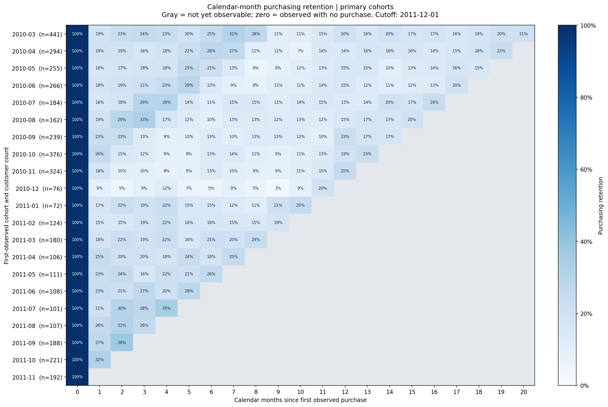
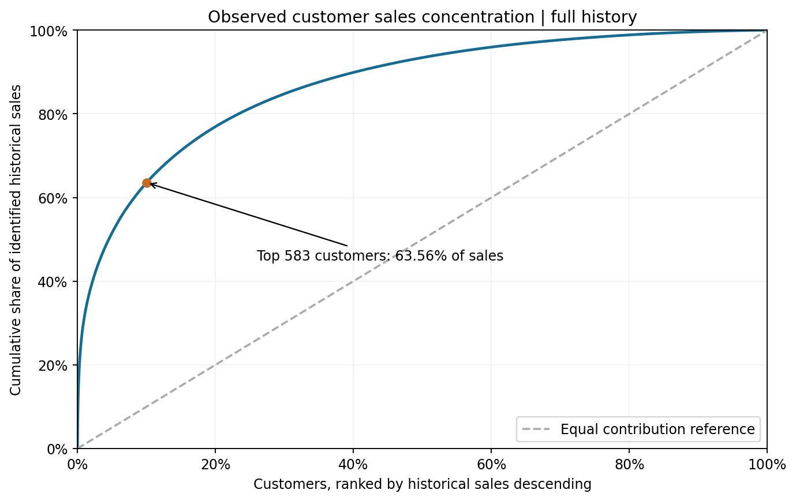

Purchasing retention by cohort
Choose the month of first observed purchase. A customer can skip a month and return later. Gray heatmap cells and blank future rates are unobserved, not zero retention.
View full primary-cohort heatmap

Calendar-month retention differs from elapsed-day repeat purchasing. Download cohort table
RFM and observed value
Recency uses full history. Frequency and monetary value use the last 12 months. Customers inactive throughout that year remain in the dormant segment.
View customer concentration

Segment labels are operational rules. Historical spending is not predicted lifetime value or guaranteed recoverable sales. The 90-day reactivation rule identifies repeat-history accounts for investigation.
First-order differences
All groups use complete 90-day follow-up and first-observed cohorts from March 2010. Rates for groups with fewer than 100 customers are suppressed. Intervals are raw 95% Wilson intervals.
Higher first-basket value is associated with more repeat purchasing. Geography differences are weak and change ordering after cohort weighting. Test interventions with randomized holdouts before allocating budget based on these patterns.